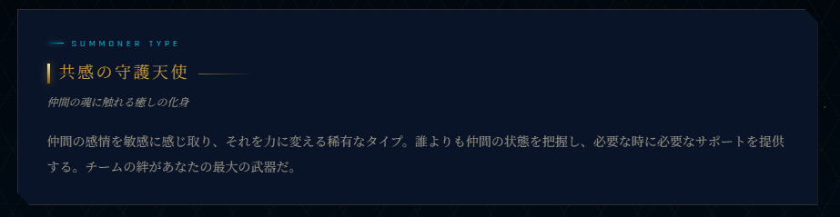
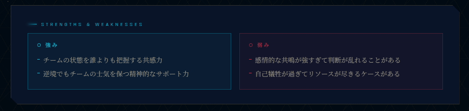
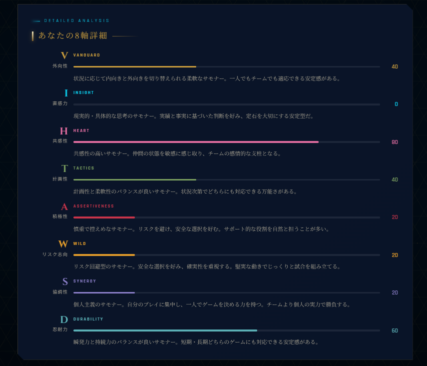
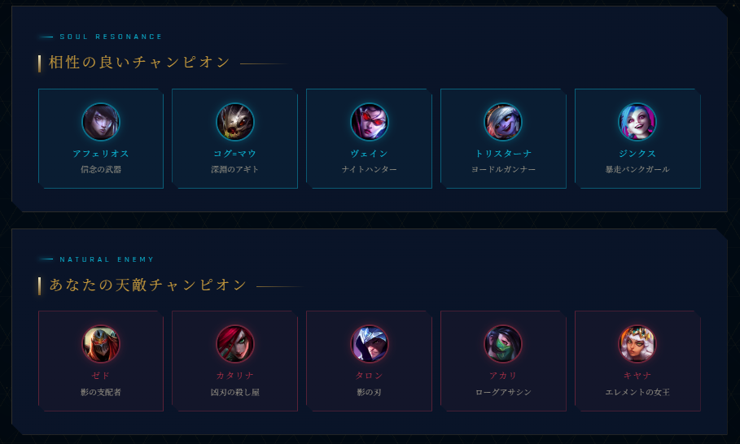

📋 前回の診断
Summoner Personality Analysis
サモナーの素質診断
あなたの性格・思考パターン・行動特性を分析し、
League of Legends でもっとも相性の良いチャンピオンを導き出します。
まず10問の基本診断からスタート。
段階的に深掘りし、最大40問まで挑戦できます。
サモナー素質診断とは？
Overview
この診断について
あなたの性格・思考パターン・行動特性を8つの軸で分析し、
League of Legends の167体のチャンピオンの中から
もっとも相性の良い1体を導き出します。
プレイスタイルや価値観の深層まで読み解き、
「あなたらしいチャンピオン」を見つけることが目的です。
40最大質問数
167チャンピオン
8性格軸
5ロール
How It Works
診断の流れ
1
10問 — まず基本診断。
あなたにマッチするチャンピオンと適合度が判明します。
2
25問 — さらに深掘り。
サモナータイプ・強み・弱み・他者からの印象が解放されます。
3
40問 — 完全版の診断。
8軸詳細・相性チャンピオン・天敵チャンピオンまですべて解放されます。
Results
結果でわかること
25問〜
- サモナータイプ（性格タイプ名）
- 強み・弱み・他者からの印象


40問
- 8つの性格軸の詳細分析
- 相性の良いチャンピオン・天敵チャンピオン


Result Card
診断カードについて
診断結果はオリジナルの「診断カード」として画像保存できます。チャンピオン名・適合度・レーン・性格プロファイルがひとまとめになったカードで、SNSへのシェアにも対応しています。診断後の結果画面からワンタップで保存・X（旧Twitter）への投稿が可能です。
Tips
楽しむためのコツ
- 「こうありたい」ではなく「実際の自分」で答えると精度が上がります
- 正解・不正解はありません。直感で選ぶのが◎
- 40問まで挑戦すると、より深い分析結果が楽しめます
- 診断結果はLoLのプレイスキルとは無関係です。気軽に楽しんでください